Решение Совещания предназначено для организации совещаний различных типов, в том числе в удалённом формате. Преднастроенные процессы позволят решить следующие задачи:
- организация совещания, оповещение его участников;
- отправка повестки совещания и включение в неё вопросов от сотрудников;
- формирование файла повестки совещания и ее согласование;
- постановка поручений исполнителям;
- согласование отдельных вопросов;
- формирование файла протокола совещания и его согласование.
Страница приложения Совещания с элементами, отсортированными по фильтру Еще не завершены, может выглядеть так:
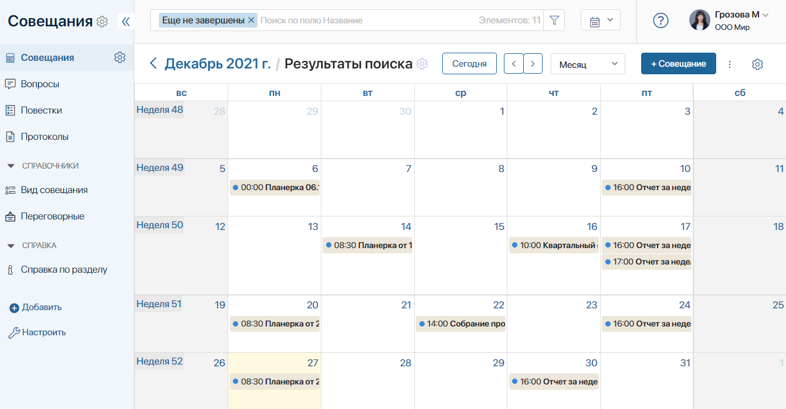
Ниже приведен пример отображения страницы приложения Вопросы с добавленными элементами:
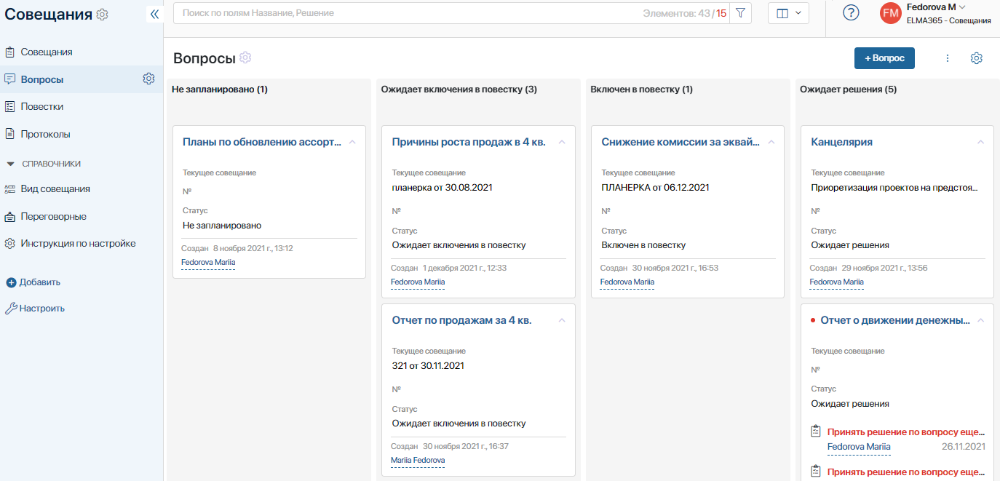
Карточка совещания может выглядеть следующим образом:
- вкладка Вопросы к совещанию;
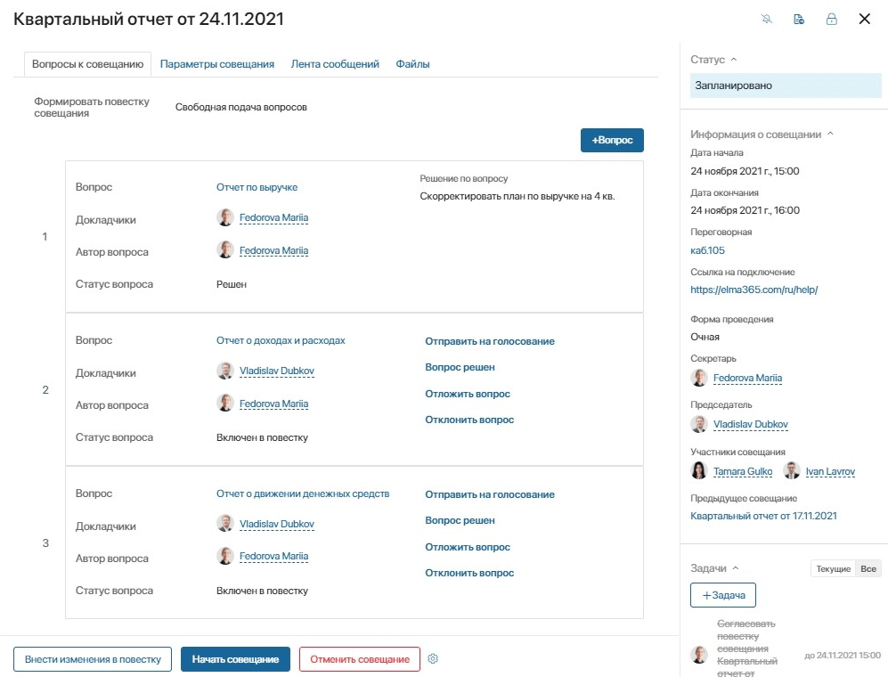
- вкладка Параметры совещания.
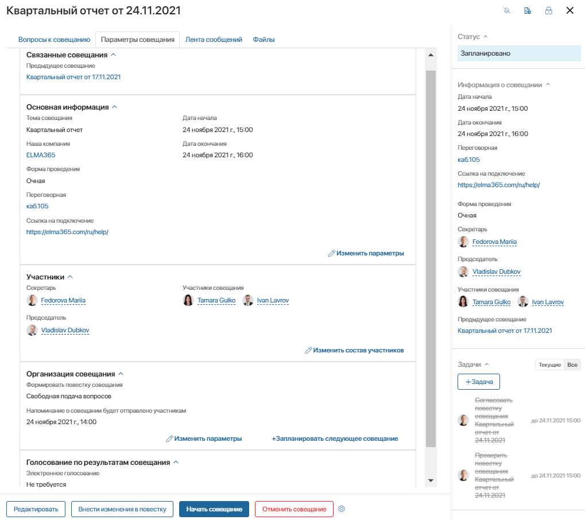
Первичная настройка решения
- Импортируйте готовое решение из каталога ELMA365 Store или файла формата .e365.
- При необходимости скорректируйте значение следующих параметров:
- Проверка списка вопросов до совещания (в часах) — на форме создания совещания автоматически высчитывается крайний срок отправки вопросов участниками. Если этот параметр не заполнен, по умолчанию применяется значение 2, то есть за два часа до начала совещания секретарю будет поставлена задача проверить список вопросов к совещанию и сформировать повестку;
- Время, за которое необходимо оповестить участников совещания (в часах) — если параметр не заполнен, по умолчанию применяется значение 1, то есть за один час до начала совещания участникам будет направлено оповещение о скором начале совещания.
Для настройки этих параметров:
- Перейдите в раздел Совещания.
- Нажмите на значок шестеренки рядом с названием приложения Совещания и выберите пункт Настройки Приложения.
- Нажмите на ссылку Дополнительные параметры.
- Раскройте список параметров.
- Наведите курсор на нужный параметр и нажмите на значок карандаша.
- В появившемся окне введите данные.
- Сохраните настройки, нажав на значок галочки.
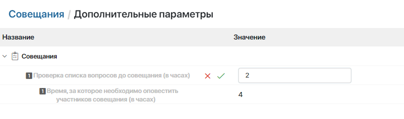
- Адаптируйте настройки решения под потребности компании. Вы можете настроить права доступа сотрудников к совещаниям, изменить формы приложений, добавить пользовательские шаблоны документов, скорректировать список статусов совещания и т. д.
Работа с решением
Приложение «Совещания»
С помощью приложения Совещания можно организовать проведение совещаний, рабочих встреч, планёрок.
Чтобы создать новое совещание в системе, сотруднику нужно:
- Перейти в приложение Совещания.
- Нажать на кнопку + Совещание в правом верхнем углу.
- Заполнить открывшуюся форму: выбрать вид совещания, например, Оперативное совещание бухгалтерии или Квартальный отчёт, добавить тему совещания, выбрать компанию, форму, время и место проведения совещания, определить участников, параметры организации совещания и параметры проведения голосования по итогам совещания.
Вид совещания, компанию и переговорную можно выбрать из списка в преднастроенных в решении справочниках или создать элемент, не покидая формы.
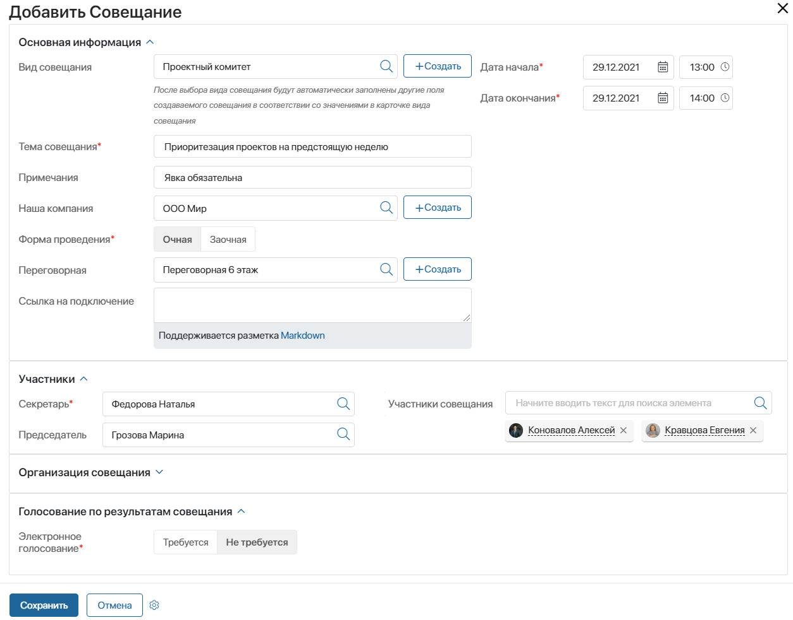
- В параметрах организации совещания можно выбрать варианты формирования повестки (подачи вопросов к совещанию):
- Заранее — все вопросы к совещанию должны быть добавлены заранее, чтобы у Секретаря была возможность сформировать файл повестки до совещания. Если при этом в поле Отправить участникам запрос на вопросы вы установили переключатель Да, в оповещении участникам о созданном совещании будет указан срок, в который они могут добавить свои вопросы к совещанию. Если же в этом поле выбран вариант Нет, вопросы к совещанию добавляет сотрудник, назначенный на роль Секретарь совещаний;
- Свободная подача вопросов.
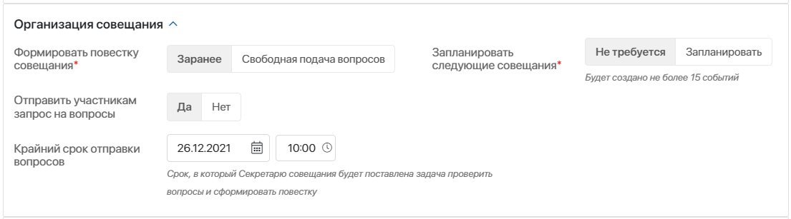
- Если создаваемое совещание является регулярным, можно при создании совещания запланировать последующие: выбрать нужную периодичность, дату завершения (то есть дату, до которой нужно создать совещания в календаре), и вариант действий в случае, если дата создаваемого совещания приходится на нерабочий день.
- После заполнения всех полей нажмите на кнопку Сохранить в нижнем левом углу формы.
После сохранения карточки совещания запустится бизнес–процесс Уведомить участников и запланировать следующие совещания. В ходе процесса создаются следующие запланированные совещания, если эта опция была включена при создании элемента, а участникам направляются оповещения.
Обратите внимание, по умолчанию просматривать карточку совещания могут только его участники. Чтобы это изменить предоставьте доступ к элементам приложения Совещания всем пользователям или определённым группам.
Организация совещания
- При получении оповещения о предстоящем совещании участники могут перейти по ссылке в карточку совещания и добавить свои вопросы. Для этого на вкладке Вопросы к совещанию необходимо нажать кнопку +Вопрос.
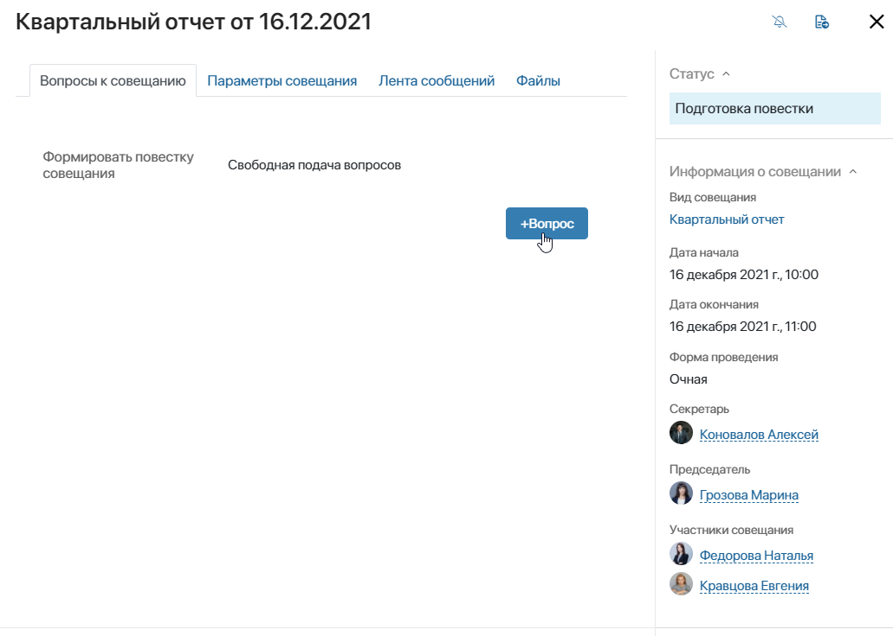
- Кроме того, каждый пользователь системы может добавить вопрос в приложении Вопросы без указания совещания, на котором вопрос должен быть рассмотрен. В этом случае пользователю, назначенному на роль Секретарь совещаний в настройках групп раздела, придет задача указать совещание в карточке вопроса.
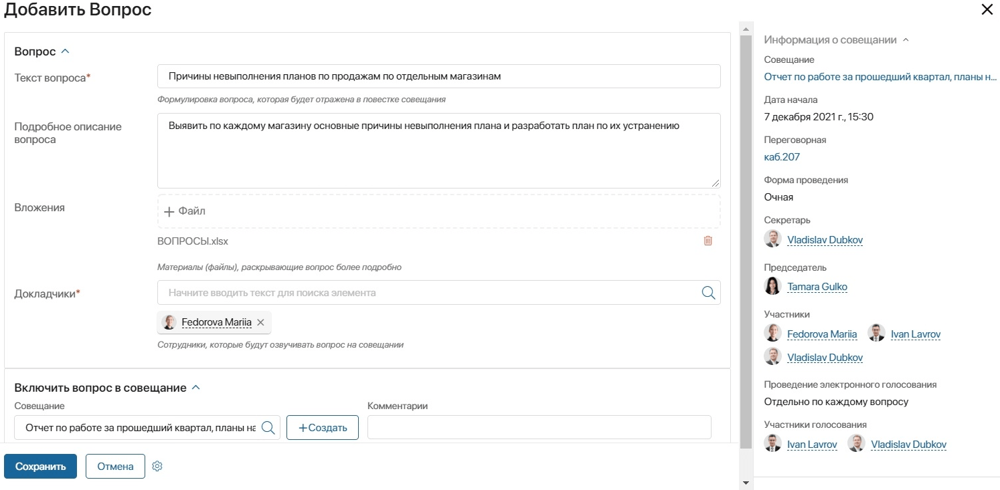
- Если при создании совещания в поле Формировать повестку совещания выбрана опция Заранее, Секретарю будет назначена задача сформировать повестку совещания. Даже если эта опция не выбрана, Секретарь или Председатель совещания имеют возможность сформировать файл повестки, нажав на кнопку Сформировать повестку на карточке совещания.
Формирование повестки
- Для формирования повестки совещания необходимо, чтобы в карточку совещания уже были добавлены вопросы. Если вопросов к совещанию еще нет, инициатору формирования повестки придет оповещение добавить вопросы. Затем в карточке совещания необходимо нажать кнопку Сформировать повестку.
- В ходе бизнес-процесса Сформировать повестку будет автоматически сгенерирован файл повестки, и Секретарю совещания будет поставлена задача проверить этот файл.
- Затем повестка будет направлена на согласование с председателем.
- После согласования участникам совещания придет оповещение о формировании повестки.
- Если в сформированную повестку необходимо внести изменения, секретарь или председатель совещания могут нажать кнопку Внести изменения в повестку на карточке совещания, после чего повторно будет запущен процесс генерации файла повестки и ее согласования.
Проведение совещания
- Перед началом совещания участникам будет направлено оповещение о его скором начале.
- Когда все участники совещания будут в сборе, секретарь или председатель совещания нажимают кнопку Начать совещание в карточке совещания.
- По ходу обсуждения вопросов совещания секретарь или председатель заносят принятые решения по каждому вопросу на вкладке Вопросы совещания, нажимая на соответствующие кнопки напротив вопроса:
- Отправить на голосование — если необходимо провести электронное голосование по вопросу;
- Ввести решение — если окончательное решение по вопросу принято;
- Отложить вопрос — если вопрос не может быть решен на текущем совещании;
- Отклонить вопрос — если вопрос не будет рассмотрен.
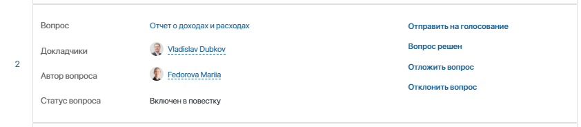
- Если необходимо создать задачу/поручение по вопросу, секретарь или председатель могут перейти в карточку вопроса и добавить задачу на вкладке Задачи.
Завершение совещания
- По окончании совещания Секретарь или Председатель совещания нажимают на кнопку Завершить совещание.
- В открывшемся окне необходимо указать, требуется ли сформировать протокол совещания.
- Если на этот момент не по всем вопросам совещания принято какое-либо решение, появится соответствующее оповещение. При этом можно закрыть совещание, и ввести решение по данным вопросам позже. Секретарю совещания придет соответствующая задача.
- Для создания нового совещания со всеми параметрами текущего: в карточке совещания перейдите на вкладку Параметры совещания и в панели Организация совещания нажмите +Запланировать следующее совещание.
- Видеозапись совещания, презентации и подобные материалы к совещанию можно добавить на вкладке Файлы в карточке совещания.
Подготовка и согласование протокола
- Если требуется подготовка протокола совещания, в ходе бизнес-процесса Сформировать протокол совещания будет автоматически сгенерирован файл протокола, и секретарю совещания будет поставлена задача проверить этот файл.
- Затем если при создании совещания в параметрах голосования был выбрана опция Требуется электронное голосование > Провести электронное голосование > По всем вопросам повестки, протокол будет направлен на согласование. При этом если в карточке совещания в поле Голосовать будут все участники указан вариант «Нет, отдельные пользователи», согласовывать протокол будут пользователи системы, указанные в поле Участники голосования. В противном случае — Участники совещания.
- Аналогично проходит согласование решений по вопросам, если выбрано Провести электронное голосование > Отдельно по каждому вопросу, но решение принимается по каждому вопросу в отдельности. Затем формируется протокол совещания, который отправляется на согласование с председателем.
- После принятия решения согласующими председателю назначается задача принять окончательное решение по протоколу совещания: согласовать либо отправить протокол на доработку секретарю и повторное согласование.
- После того как протокол согласован, участникам совещания приходит задача ознакомиться с протоколом.
Адаптация решения под ваши потребности
В каждой компании формируются своя практика и правила проведения совещаний. Поэтому весьма вероятно, что вам будет необходимо внести изменения в логику бизнес–процессов данного решения и отредактировать формы карточек приложений для соблюдения требований вашей компании.
Настройка доступа
Вы можете определить роли пользователей и добавить их в определённые группы. Затем настроить доступ для этих групп к преднастроенным в решении приложениям.
- Напротив названия раздела Совещания нажмите на значок шестерёнки и выберите пункт меню Группы и роли.
В решении преднастроена роль Секретарь совещаний. Создайте пользовательские группы и роли и добавьте в них пользователей.
Группы и роли используются:
- для ограничения видимости раздела;
- при настройке доступа к приложениям;
- для определения участников бизнес–процессов.
- Настройте доступ к приложениям раздела. Например, предоставьте права на просмотр карточек совещаний всем пользователям или ограничьте права на создание и редактирование протоколов, разрешив эти действия только для роли Секретарь совещаний.
Для этого откройте страницу нужного приложения, нажмите значок шестерёнки рядом с его названием и выберите пункт Настройка доступа. Отредактируйте права доступа по умолчанию.
Определите роли пользователей и добавьте их в группы. Для это напротив названия приложения Совещания нажмите на значок шестеренки и выберите пункт меню Группы и роли.
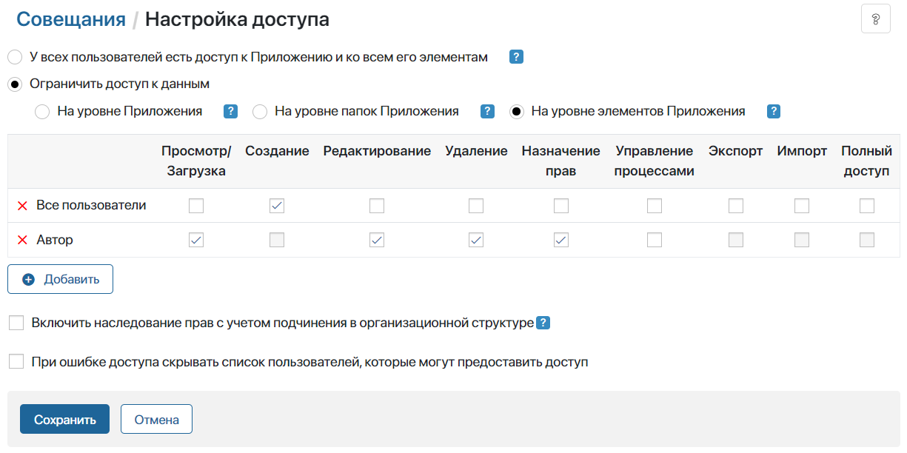
Подробнее об ограничении доступа читайте в статье «Доступ к данным приложения».
Формы приложения
На карточке совещаний, вопросов и других приложений раздела можно скрывать поля или добавлять. Подробнее о том, как это сделать, читайте в статье «Формы элемента приложения».
Процессы
Процессы можно дорабатывать под ваши потребности. Вы можете удалить или добавить операции в бизнес-процесс, изменить сроки выполнения задачи или настроить их формы. Для этого рядом с названием приложения Совещания нажмите на значок шестерёнки и выберите пункт Бизнес–процессы.
Подробнее о настройке бизнес-процессов читайте в разделе «Дизайнер бизнес-процессов».
Шаблоны документов
В решении предусмотрена возможность генерации повестки совещания и протокола по шаблону. Вы можете добавить свой шаблон либо внести изменения в шаблон, имеющийся в решении.
Для этого рядом с названием приложения Совещания нажмите на значок шестерёнки и выберите пункт Шаблоны документов.
При необходимости вы можете также изменить список переменных для генерации документа по шаблону. Для этого в соответствующем бизнес–процессе (Сформировать повестку или Сформировать протокол совещания) зайдите в настройки блока Генерация по шаблону и выберите нужную переменную процесса. Если в новом шаблоне используются те же переменные, что в имеющемся шаблоне решения, в процесс не требуется вносить изменений.
Статусы
Для того, чтобы отслеживать текущее состояние по вопросам, удобно использовать статусы. Например, после создания вопроса он получит статус Не запланировано, если не указано совещание, на котором нужно рассмотреть вопрос, или статус Ожидает включения в повестку, если совещание указано. После формирования и согласования повестки совещания, статус изменится на Включен в повестку.
Вы можете задать свои собственные статусы, разрешить или запретить пользователям выставлять их вручную. Подробнее об этом читайте в статье «Статусы документов как инструмент контроля».
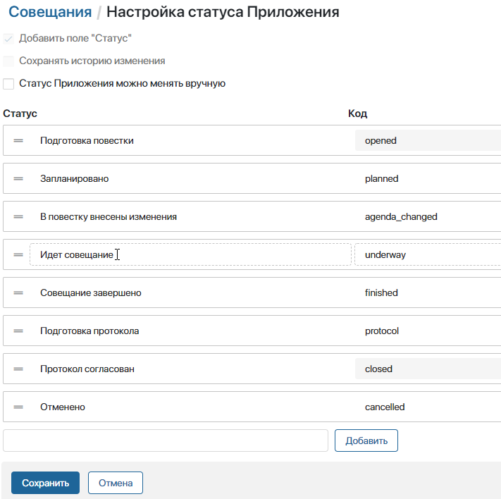
Хранение, поиск, настройки отображения
Все совещания отображаются на странице приложения Совещания. Чтобы быстро ориентироваться и находить нужные события, можно воспользоваться строкой поиска.
При необходимости можно легко настроить фильтры. Например, при помощи фильтра можно отобразить все совещания со статусом Запланировано, а остальные скрыть. Можно сохранить настроенные фильтры, чтобы пользоваться ими в дальнейшем. Подробнее об этом мы написали в статье «Поиск и фильтры».
Вы можете изменить способ отображения карточек вопросов — их можно отображать в виде плитки или таблицы. Кроме того, на плитку каждого вопроса можно добавить статусы, название совещания и другую полезную информацию. Подробнее о настройках отображения карточек читайте в статье «Канбан-доска».
На страницу приложения можно добавить кнопку запуска настроенного бизнес-процесса.
Шаблоны для генерации названий
В состав решения входит настроенный шаблон для генерации названия совещаний. Он содержит тему совещания и его дату. Это упрощает процесс создания совещаний, делает поиск нужного совещания более быстрым и обеспечивает единообразие. Подробнее о формировании названий по шаблону читайте в статье «Название элемента».
Интерфейсы
Для отображения информации о вопросе на форме просмотра карточки совещания использован пользовательский виджет Отображение вопросов совещания, который в свою очередь, содержит виджет Отображение вопроса для совещания. Вы можете изменить состав отображаемых полей вопроса, перейдя в конструктор виджета Отображение вопроса для совещания.
Для этого рядом с названием раздела Совещания нажмите на значок шестерёнки и выберите пункт Интерфейсы. Откройте виджет в дизайнере, отредактируйте настройки, сохраните и опубликуйте виджет.
Подробнее об этом читайте в статье «Создание интерфейсов».